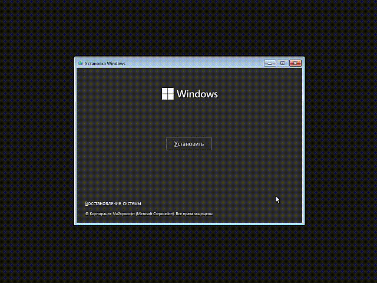
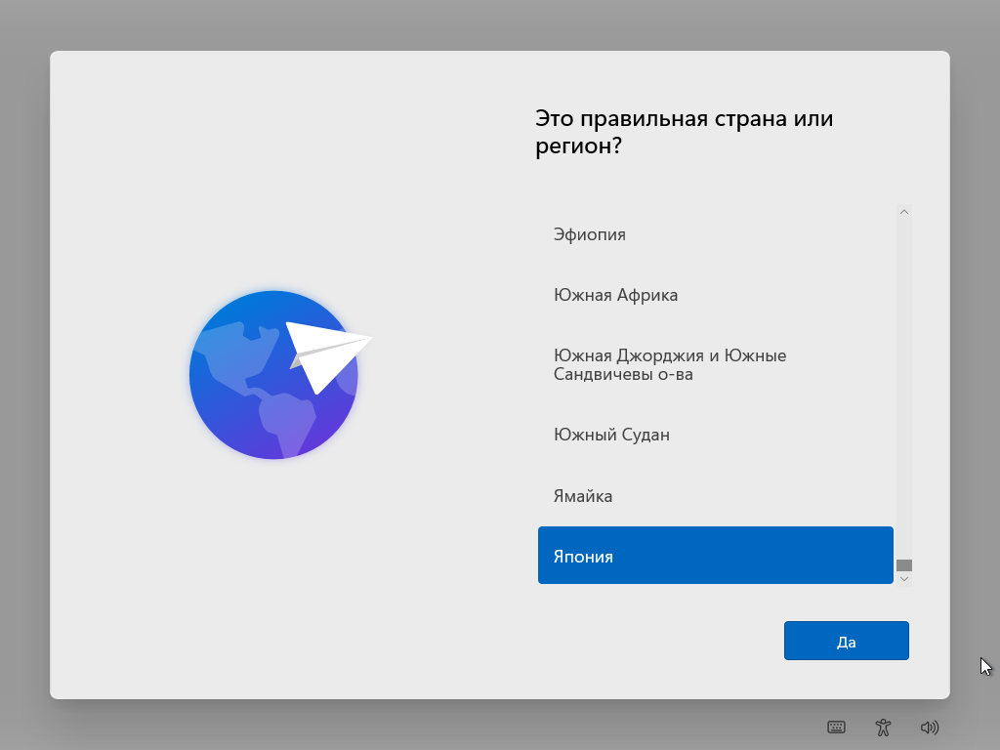
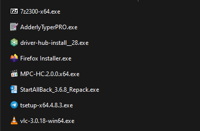
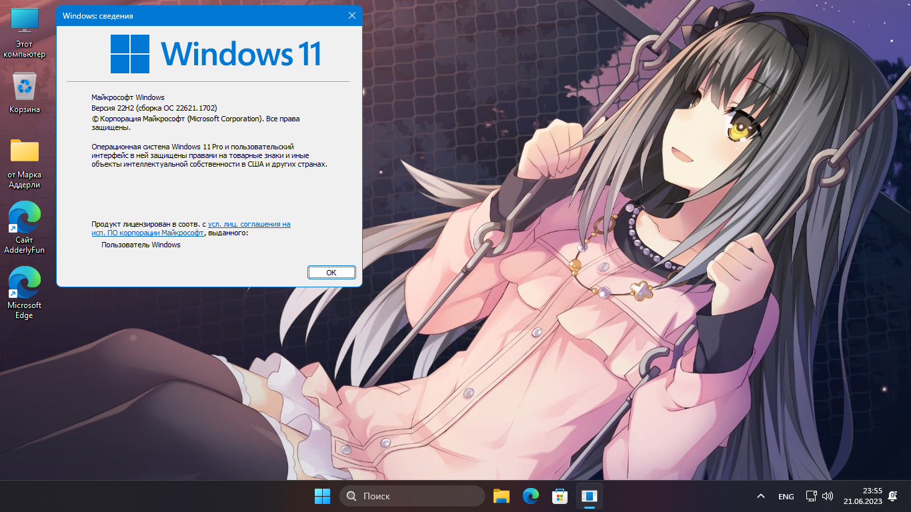
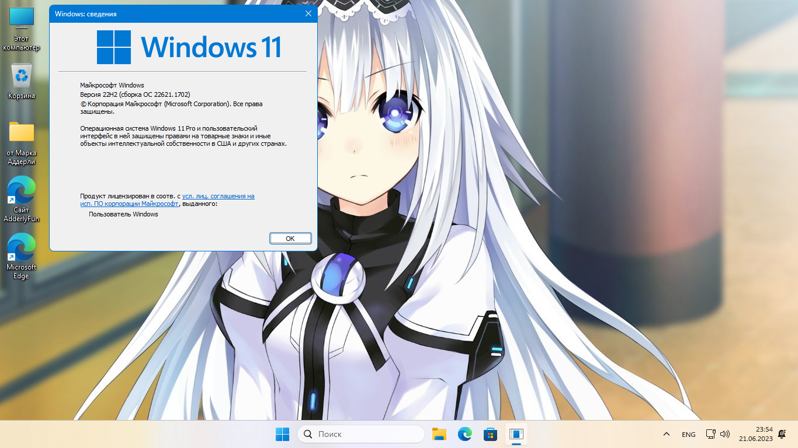
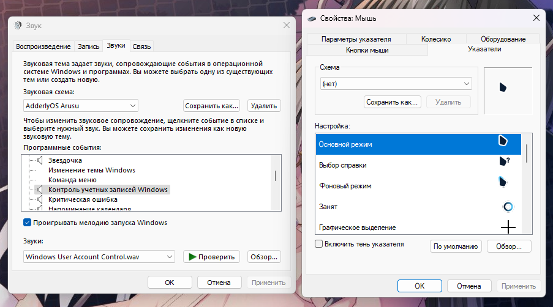
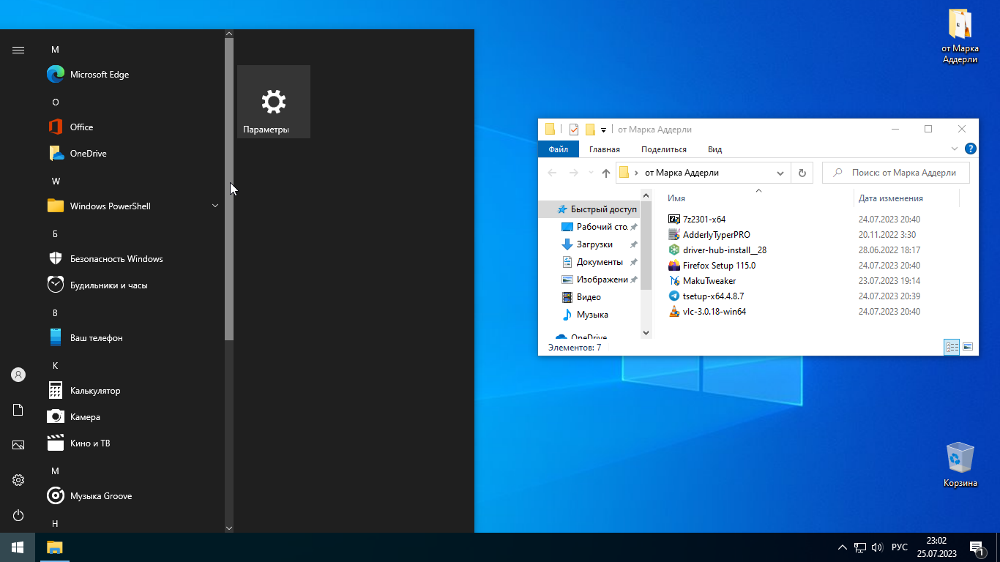
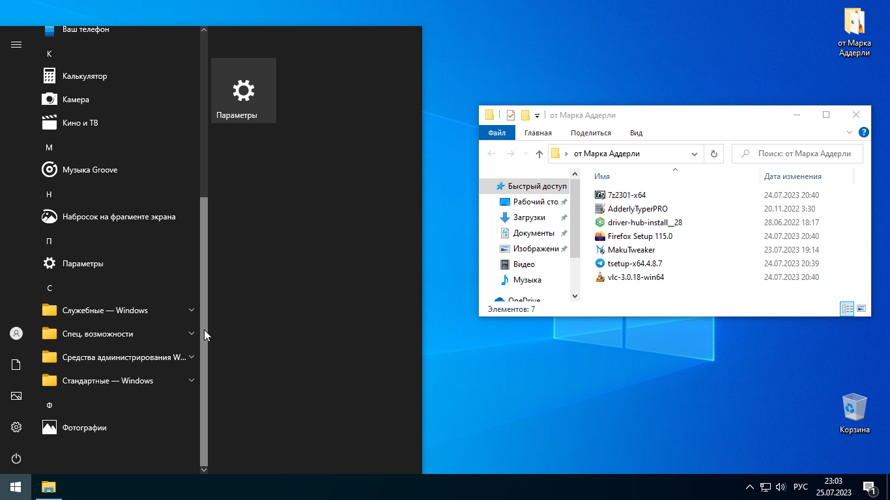
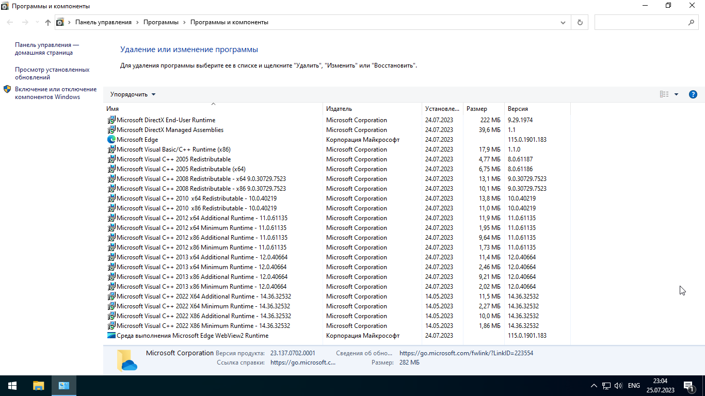

Сборки от Аддерли
AdderlyOS Arusu V2 (21.06.2023)

Отключена проверка на железо.

Небольшие изменения в OOBE,
Отключено автообновление,
Отключена автоперезагрузка при BSOD,
Отключён UAC, Кортана, и SmartScreen.
Доступен вход с локального аккаунта.

Установлены Microsoft Visual C++
Redistributable 2015-2022
А так же в папке находятся
инсталляторы основных программ



Звуки из Windows 10 Build 10074,
Тема тёмного курсора мыши,
По умолчанию на рабочем столе
есть иконка "Этот Компьютер"
Включен по умолчанию акцентный цвет, отключена слежка и эксперементирование,
и сбор информации пользователя.
По умолчанию отключено сохранение в недавних документах,
а так же включены расширения файлов, и скрытые папки.
По умолчанию в пуске добавлены кнопки параметров, фотографий, музыки, и документов,
а так же выбран режим "больше закреплений"
Отключён Автозапуск и Быстрый запуск.
Откреплены из панели задач: просмотр задач, виджеты, и Microsoft Teams.
По умолчанию всегда будет показываться подробная информация при работе с файлами.
При нажатии PrtSc не будут открываться ножницы,
а будет делаться всего лишь скриншот. (как и раньше)
По умолчанию в проводнике открывается не "Главная" а "Этот ПК"
Каждое окно проводника по умолчанию имеет отдельный процесс,
а при поиске больше не выдаются результаты из Bing.
Файлы которые находятся в корзине более 14 дней автоматически удаляются.
Файлы которые находятся в папке "Загрузки" и не используются пользователем
автоматически удаляются через 30 дней.
Archive.org
Mediafire
Mega
PixelDrain
Windows 10 Pro 20H2 Lite (25.07.2023)



Удалены Windows Subsystem for Linux, Windows To Go, WordPad, Easy Transfer, Ease of Access темы,
Удалены стандартные UWP приложения: Windows Mixed Reality, Xbox компоненты, Microsoft Store,
PDF Reader, Люди, Почта, Календарь, 3D Viewer, Карты, Feedback Hub, Кортана, OneNote, Paint3D,
Современный солитер, Советы, Погода, Новости и StickyNotes
Удален Центр обновлений Windows и телеметрия.
По умолчанию на рабочем столе скрыты "Новости и интересы", Meet, Просмотр задач и Поиск.
Интегрированны DirectX 9, Visual C++ Redistributable 2005 - 2022, x86 x64
Mediafire
PixelDrain
Сборки от Аддерли
AdderlyOS Arusu V2 (21.06.2023)
Просмотр полной версии страницы и описания сборки доступен только в ПК версии и в окнах шириной 1200 пикселей и выше.
Archive.org
Mediafire
Mega
PixelDrain
Mediafire
PixelDrain
Windows 10 Pro 20H2 Lite (25.07.2023)